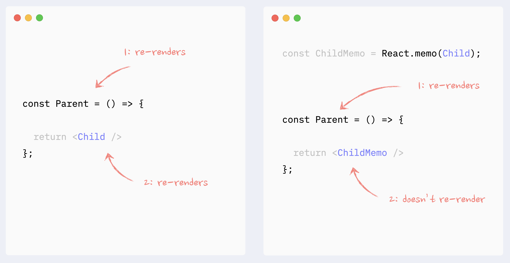
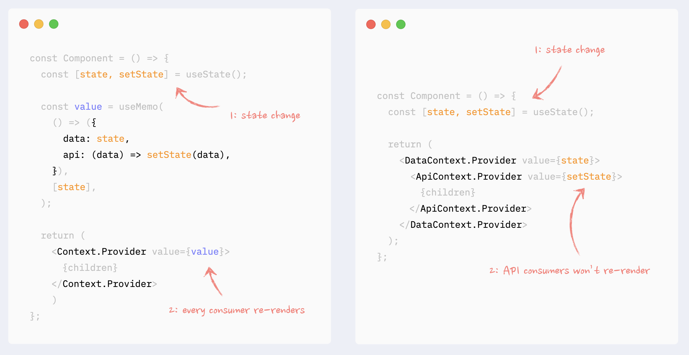

React重新渲染指南：一切尽在掌握
获取中... 获取中...
原文地址 https://www.developerway.com/posts/react-re-renders-guide
关于React的重新渲染综合指南。该指南解释了什么是重新渲染，什么是必要的和不必要的重新渲染，什么可以触发 React 组件重新渲染。
还包括可以帮助防止重新渲染的最重要的模式和一些导致不必要的重新渲染和性能不佳的反模式。每个模式和反模式都附有Demo演示和代码示例。
1. 什么是React中的重新渲染(Re-render)
在谈论 React 性能时，我们需要关注两个主要阶段：
- 初始渲染 - 当组件首次出现在屏幕上时发生
- 重新渲染 - 已经在屏幕上的组件的第二次和任何连续渲染
当 React 需要使用一些新数据更新应用程序时，会发生重新渲染。通常，这是由于用户与应用程序交互或通过异步请求或某些订阅模型传入的一些外部数据而发生的。
没有任何异步数据更新的非交互式应用永远不会重新渲染，因此不需要关心重新渲染性能优化。
🧐 什么是必要和不必要的重新渲染？
必要的重新渲染 - 当组件数据源发生改变，或组件直接使用了新的数据。例如，如果用户在输入框中数入新内容，则管理其状态的组件需要在每次敲击键盘时更新自身，即重新渲染。
不必要的重新渲染 - 由于错误或低效的应用程序架构，通过不同的重新渲染机制通过应用程序传播的组件的重新渲染。例如，如果用户在输入框中输入，并且在每次敲击键盘时重新渲染整个页面，则该页面已被不必要地重新渲染。
不必要的重新渲染本身 不是问题 ：React 非常快并且通常能够在用户没有注意到的情况下悄悄处理。
但是，如果重新渲染发生得太频繁和/或在非常重的组件上发生，这可能会导致用户体验出现“滞后”，每次交互都会出现明显的延迟，甚至应用程序变得完全没有响应。
2. React 组件什么时候重新渲染自己？
组件重新渲染自身有四个原因：状态更改、父组件（或子组件）重新渲染、Context发生变化和Hook更改。还有一个很大的传言：当组件的属性(prop)发生变化时会发生重新渲染。就其本身而言，这不是真的（请参阅下面的解释）。
🧐重新渲染原因：状态变化
当组件的状态发生变化时，它会重新渲染自己。通常，它发生在回调或 useEffect 勾子中。
状态变化是所有重新渲染的“根”源。

🧐重新渲染原因：父组件重新渲染
如果父组件重新渲染，组件将重新渲染自己。或者，如果我们从相反的方向来看：当一个组件重新渲染时，它也会重新渲染它的所有子组件。
它总是往下传导的：子组件的重新渲染不会触发父组件的重新渲染。 （这里有一些警告和例外情况，请参阅完整指南了解更多详细信息：React Element、children、parents 和 re-renders 的奥秘）。

🧐重新渲染原因：上下文(Context)变化
当 Context Provider 中的值发生变化时，所有使用此 Context 的组件都将重新渲染，即使它们不直接使用数据的更改部分。这些重新渲染无法通过直接记忆(memoization)来防止，但有一些解决方法可以模拟它（参见第 7 部分：防止由上下文引起的重新渲染）。

🧐 重新渲染原因：钩子(hook)变化
钩子内发生的一切都“属于”使用它的组件。关于上下文和状态更改的相同规则在这里适用：
- 钩子内的状态更改将触发“宿主”组件的不可预防的重新渲染
- 如果钩子使用了 Context 并且 Context 的值发生了变化，它将触发“宿主”组件的不可预防的重新渲染
钩子可以链式连接。链中的每个钩子仍然“属于”“宿主”组件，并且相同的规则适用于其中任何一个。
⛔️重新渲染原因：属性(props)变化
在谈论未缓存(memo)组件的重新渲染时，组件的 props 是否改变并不重要。
因为改变 props，它们需要由父组件更新。这意味着父组件必须重新渲染，这将触发子组件的重新渲染，无论其props如何。
只有在使用缓存技术（React.memo、useMemo）时，props 的变化才变得重要。

3. 使用组合防止重新渲染
⛔️反模式：在渲染函数中创建组件
在另一个组件的渲染函数中创建组件是一种反模式，可能是最大的性能杀手。在每次重新渲染时，React 都会重新创建这个组件（即销毁它并从头开始重新创建它），这将比正常的重新渲染慢得多。最重要的是，这将导致以下错误：
- 重新渲染期间可能出现内容“闪烁”
- 每次重新渲染时都会在组件中重置状态
- 没有依赖项的useEffect 每次重新渲染后都会处罚
- 重新渲染前这个组件被聚焦，重新渲染后焦点将丢失
需要阅读的其他资源：如何编写高性能的 React 代码：规则、模式、注意事项
✅使用组合防止重新渲染：向下移动状态
当一个组件非常重，而它的其中一个部分状态只用在渲染树的孤立的特定的地方时，这种模式可能是有益的。一个典型的例子是在一个复杂的组件中通过点击按钮来打开/关闭一个对话框，该组件渲染了页面的很大一部分。
在这种情况下，控制模态对话框外观的状态、对话框本身以及触发更新的按钮都可以封装在一个更小的组件中。因此，较大的组件不会在这些状态更改时重新渲染。
需要阅读的其他资源：React Element 的奥秘、子组件、父组件和重新渲染，如何编写高性能的 React 代码：规则、模式、注意事项

✅ 使用组合防止重新渲染：children作为属性
这也可以称为“围绕子组件的包裹状态”。这种模式类似于“下移状态”：它将状态变化封装在一个较小的组件中。这里的不同之处在于，状态用于包装渲染树的慢速部分的元素，因此不能那么容易地提取它。一个典型的例子是附加到组件根元素的 onScroll 或 onMouseMove 回调。
在这种情况下，可以将状态管理和使用该状态的组件提取到一个较小的组件中，并且可以将慢速组件作为子组件传递给它。从较小的组件的角度来看，children只是props，因此它们不会受到状态变化的影响，因此不会重新渲染。
其他要阅读的资源：React Element、children、parents 和 re-renders 的奥秘

✅ 使用组合防止重新渲染：组件作为属性
与之前的模式几乎相同，具有相同的行为：它将状态封装在一个较小的组件中，而重组件作为 props 传递给它。道具不受状态变化的影响，因此重组件不会重新渲染。
当一些重组件独立于状态，但不能作为一个组作为子元素提取时，它可能很有用。
在此处阅读有关将组件作为属性传递的更多信息：React 组件作为属性：正确的方式™️，React 元素的奥秘，孩子，父母和重新渲染

4. 使用React.memo防止重新渲染
在 React.memo 中包装一个组件将停止在渲染树的某处触发的下游重新渲染链，除非该组件的 props 已更改。
这在渲染不依赖于重新渲染源（即状态、更改的数据）的重组件时很有用。

✅ React.memo：带有属性(props)的组件
所有不是值类型的属性都必须被记忆(memo)，以便 React.memo 工作

✅ React.memo：组件作为prop或children
React.memo 必须被应用于作为子元素/属性传递的元素。对父组件进行memo化处理是行不通的：子元素和属性都是对象，所以它们会随着每次重新渲染而改变。
有关 memoization 如何适用于子/父关系的更多详细信息，请参见此处：React Element、子组件、父组件和重新渲染的奥秘

5. 使用 useMemo/useCallback 提高重新渲染性能
⛔️ 反模式：props 上不必要的 useMemo/useCallback
父组件缓存prop不会阻止子组件的重新渲染。如果父组件重新渲染，它将触发子组件的重新渲染，而不管其prop如何。

✅ 必要的 useMemo/useCallback
如果一个子组件被包裹在 React.memo 中，所有不是原始类型的 props 都必须使用useMemo

如果组件在 useEffect、useMemo、useCallback 等钩子中使用非原始值作为依赖项，则应该对其进行记忆。

✅ useMemo 进行耗时的计算
useMemo 的用例之一是避免每次重新渲染时进行复杂的计算。
useMemo 有它的成本（消耗一点内存并使初始渲染稍微慢一些），所以它不应该用于每次计算。在 React 中，在大多数情况下，安装和更新组件将是最耗时的计算（除非您实际上是在计算素数，否则您不应该在前端这样做）。
因此，useMemo 的典型用例是记忆 React 元素。通常是现有渲染树的一部分或生成的渲染树的结果，例如返回新元素的映射函数。
与组件更新相比，“纯”javascript 操作（如排序或过滤数组）的成本通常可以忽略不计。

6. 提高列表的重新渲染性能
除了常规的重新渲染规则和模式，key 属性会影响 React 中列表的性能。
重要提示：仅提供 key 属性不会提高列表的性能。为了防止重新渲染列表元素，您需要将它们包装在 React.memo 中并遵循其所有最佳实践。
Key的值应该是一个字符串，这在列表中每个元素的重新渲染之间是一致的。通常，使用项目的 id 或数组的索引。
可以使用数组的索引作为键，如果列表是静态的，即元素没有添加/删除/插入/重新排序。
在动态列表上使用数组的索引会导致：
- 如果item具有状态或任何不受控制的元素（如表单输入），则会出现错误
- 如果item包装在 React.memo 中，性能会下降
在此处阅读有关此内容的更多详细信息：React 关键属性：性能列表的最佳实践
⛔️反模式：随机值作为列表中的键
随机生成的值永远不应用作列表中键属性的值。它们将导致 React 在每次重新渲染时重新安装项目，这将导致：
- 列表的表现很差
- 如果元素具有状态或任何不受控制的元素（如表单输入），则会出现错误
7. 防止由上下文引起的重新渲染
如果 Context Provider 不是放在应用程序的最根目录，并且由于其祖先的更改，它可能会重新渲染自身，则应该记住它的值。

✅ 防止上下文重新渲染：拆分数据和 API
如果在 Context 中存在数据和 API（getter 和 setter）的组合，则它们可以拆分为同一组件下的不同 Provider。这样，使用 API 的组件仅在数据更改时不会重新渲染。
在此处阅读有关此模式的更多信息：如何使用 Context 编写高性能的 React 应用程序

✅ 防止上下文重新渲染：将数据分成块
如果 Context 管理一些独立的数据块，它们可以被拆分为同一个提供者下的更小的提供者。这样，只有更改块的消费者才会重新渲染。
在此处阅读有关此模式的更多信息：如何使用 Context 编写高性能的 React 应用程序

✅ 防止上下文重新渲染：上下文选择器
没有办法阻止使用部分 Context 值的组件重新渲染，即使使用的数据没有更改，即使使用 useMemo 钩子也是如此。
然而，上下文选择器可以通过使用高阶组件和 React.memo 来伪造。
在此处阅读有关此模式的更多信息：React Hooks 时代的高阶组件

本文由 Xuanye 创作，采用 知识共享署名 4.0 国际许可协议。
本站文章除注明转载/出处外，均为本站原创或翻译，转载请务必署名。